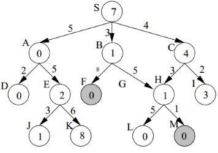

Summary
You are given two jugs with capacities x and y litres. There is an
infinite amount of water supply available. You need to determine
whether it is possible to measure exactly z litres using these two
jugs. If z liters of water is measurable, you must have z liters of
water contained within one or both buckets by the end.